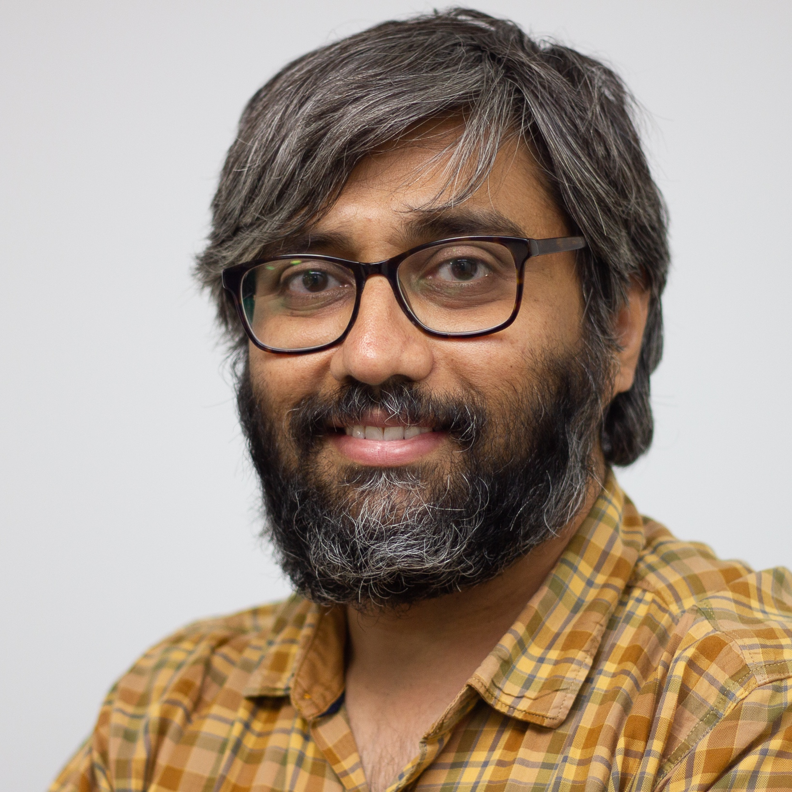

Welcome to my homepage. I work as the Chief AI Scientist at TANUH AI-CoE, a Government of India initiative to promote translational AI research for public healthcare. Previously, I was with GE HealthCare, Bangalore, as a Senior Staff Scientist in the AI & ML Advanced Technology Group (ATG), where I led several programs on research and development of AI solutions for clinical problems in medical imaging and imaging workflows spanning Ultrasound and CT modalities. My research interests are in the areas of medical imaging, image and signal processing, and machine learning. I am also interested in developing scalable AI solutions for public healthcare and environmental problems.
I am also a visiting faculty at the Department of Computational and Data Sciences (CDS), and Department of Computational and Data Sciences (CST), IISc, Bangalore. I am also a member of the advisory board of Emmetra Inc, a startup developing AI solutions for image quality tuning.
Here is the link to my Google Scholar profile